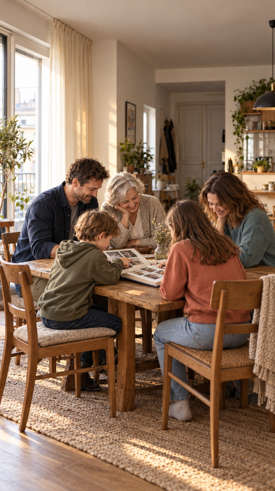

Momentro Guides · Family and travel films
How to make a rewatchable memory film from everyday life and travel
The trip does not have to carry the whole story. A few ordinary moments before and after it can make the film feel much more like your life.

Start with the feeling, not the date order
When clips come from a holiday, it is easy to put them in chronological order and call that the film. Sometimes that is exactly what you want. But a film people return to often has a smaller job: to hold the feeling of a season, a family, or a place in your life.
That can include the ordinary parts. A wet suitcase by the door. Breakfast before an early train. The sleepy drive home. A child showing someone a shell weeks later. Those moments give the travel footage somewhere to belong.
You do not have to prove that every clip mattered. You only need enough moments to make the ones you choose feel true.
Choose one quiet thread
A useful thread is a simple sentence you can keep in your head while choosing: “the summer we learned to slow down,” “our first trip after a busy year,” or “the little things the children were into then.” It is not a slogan for the film. It is a way to decide what belongs.
If a clip supports that feeling, keep it in the first pile. If it is a lovely clip but belongs to a different story, let it wait for another film. Nothing is being thrown away by making one selected set.
Build five small anchors
You do not need a full script. Five anchors are usually enough to stop the edit from becoming a long camera roll:
- Before: one ordinary moment that says where life was starting from.
- Going: a departure, a road, a train window, or the first change of scene.
- Being there: a few details, people, and places rather than every stop.
- Coming back: a quiet return, unpacking, dinner, or the familiar room again.
- Keeping it: one last image that feels worth holding onto.
Not every film needs every anchor. They are simply a gentler shape than trying to include every good thing in the order it happened.
Let the ordinary scenes breathe
Travel images can be spectacular. The everyday clips are often short, wobbly, or badly lit. They can still be the scenes that make somebody smile years later because they show a person as they really were.
Give the ordinary scene a little room. Let a laugh finish. Keep one small sound if it brings the moment back. Then move on. The contrast between a kitchen table and a faraway coastline is often more moving than a film that is only highlights.
Make one working selection, not a perfect archive
Family and travel footage is usually spread across phones, cameras, cards, drives, and folders. Large originals can make unnecessary upload and re-upload feel like another project on top of the editing. Keep your archive and backup plan separate from the smaller set you are choosing for this one film.
Momentro is designed for that selected set on your computer. Start the analysis, then go and do something else while the computer works through the files. Processing time depends on the footage and your computer. Later, return to review the draft, make one small change if it helps, and start the export when the film feels ready.
Watch for the one scene you would miss
On the first review, do not begin by looking for errors. Ask a softer question: if this scene disappeared, would the film feel less like us? That question is often enough to reveal whether a quiet everyday clip stays, whether a travel sequence is too long, or whether the ending needs one more breath.
A rewatchable film is rarely the biggest possible film. It is the one that leaves enough space for the person watching to remember their own version of the day.
Start with the moments you already want to keep.
Momentro helps you turn selected family and travel clips into a draft you can review and export on your computer.